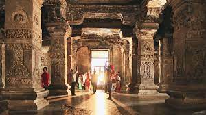
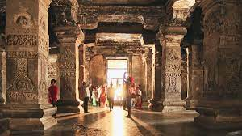

Ellora Caves
These 34 monasteries and temples, extending over more than 2 km, were dug side by side in the wall of a high basalt cliff, not far from Aurangabad, in Maharashtra. Ellora, with its uninterrupted sequence of monuments dating from A.D. 600 to 1000, brings the civilization of ancient India to life. Not only is the Ellora complex a unique artistic creation and a technological exploit but, with its sanctuaries devoted to Buddhism, Hinduism and Jainism, it illustrates the spirit of tolerance that was characteristic of ancient India.
The invaluable ensemble of 34 caves at Ellora in the Charanandri hills of western India’s Maharashtra State showcases a spirit of co-existence and religious tolerance through the outstanding architectural activities carried out by the followers of three prominent religions: Buddhism, Brahmanism, and Jainism. The rock-cut activity was carried out in three phases from the 6th century to the 12th century. The earliest caves (caves 1–12), excavated between the 5th and 8th centuries, reflect the Mahayana philosophy of Buddhism then prevalent in this region. The Brahmanical group of caves , including the renowned Kailasa temple , was excavated between the 7th and 10th centuries. The last phase, between the 9th and 12th centuries, saw the excavation of a group of caves reflecting Jaina philosophy.